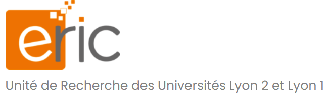
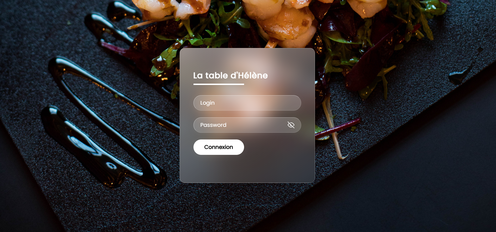

Imrane BENOIT
Etudiant au Lycée Jacques Brel
en Développement
(+33) 6-20-64-96-59 ·
imranebenoit@gmail.com
Stage chez SBPContexte
BesoinL'objective du site était de permettre à un utilisateur de pouvoir gérer les différentes associations dont il était le gestionnaire. Environnement
Réalisation
Problèmes rencontrés
Bilan
|
Utilisation de GLPI
Contexte
BesoinL'objective du TP étant de réussir à mettre en place GLPI et FusionInventory puis de réussir à faire un ticket. Environnement
Réalisation
Problèmes rencontrés
Bilan
|
Stage au labo ERIC

Contexte
BesoinLe laboratoire ERIC utilise sur WordPress qui était héberger chez une université à Saint-Etienne, mais ils ont décidé de l’héberger localement et voulait en profiter pour faire le tri dans leur WordPress. Environnement
Réalisation
Problèmes rencontré
Bilan
|
Projet SGRC

Contexte
BesoinLe projet SGRC est une collaboration sur plusieurs années entre le BTS SIO de Jacques et le Bac Pro Service d’Hélène Boucher. L’objectif étant de fournir une application web pour aider à la gestion du restaurant scolaire. Environnement
Réalisation
Bilan
|